Design fidelity report
| Page | Route | Width | Match (1px) | Exact | Height design / build | Overflow | axe |
|---|---|---|---|---|---|---|---|
| home-desktop | / | 1280px | 89.01% | 82.68% | 5959 / 6076 | none | 0 |
| home-phone | / | 402px | 80.31% | 71.67% | 6623 / 6864 | none | 0 |
| features-desktop | /features | 1280px | 88.92% | 82.26% | 4374 / 4396 | none | 0 |
| features-phone | /features | 402px | 75.17% | 65.39% | 5911 / 6203 | none | 0 |
| about-desktop | /about | 1280px | 78.49% | 74.49% | 3920 / 3956 | none | 0 |
| about-phone | /about | 563px | 54.9% | 50.02% | 5647 / 5165 | none | 0 |
| blog-desktop | /blog | 1280px | 79.69% | 73.49% | 3000 / 2957 | none | 0 |
| blog-phone | /blog | 556px | 53.26% | 47.43% | 4917 / 4590 | none | 0 |
| blog-detail-desktop | /blog/the-future-of-digital-infrastructure-is-intentional | 1280px | 78.04% | 72.26% | 3615 / 3423 | none | 0 |
| blog-detail-phone | /blog/the-future-of-digital-infrastructure-is-intentional | 402px | 65.41% | 55.73% | 5057 / 4627 | none | 0 |
| changelog-desktop | /changelog | 1280px | 93.39% | 89.2% | 2756 / 2732 | none | 0 |
| changelog-phone | /changelog | 402px | 75.67% | 68.5% | 3708 / 4048 | none | 0 |
| pricing-desktop | /pricing | 1280px | 94.99% | 90.35% | 3032 / 3045 | none | 0 |
| pricing-phone | /pricing | 402px | 88.68% | 81.15% | 4319 / 4488 | none | 0 |
home-desktop / at 1280px
89.01% of pixels match within 1px · 82.68% match exactly · design 5959px tall, build 6076px
Cookie bar hidden: it is a sticky bar at the bottom of the screen; the design draws it after the footer.
differs anti-aliasing or 1px shift excluded
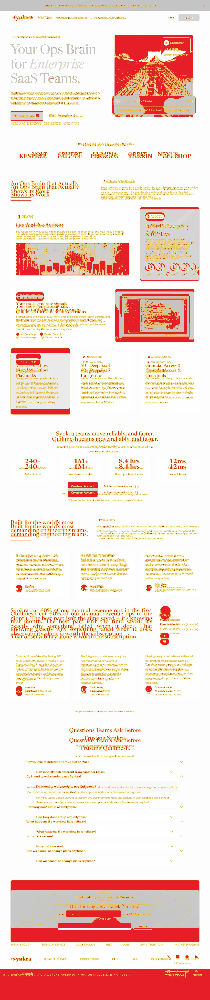
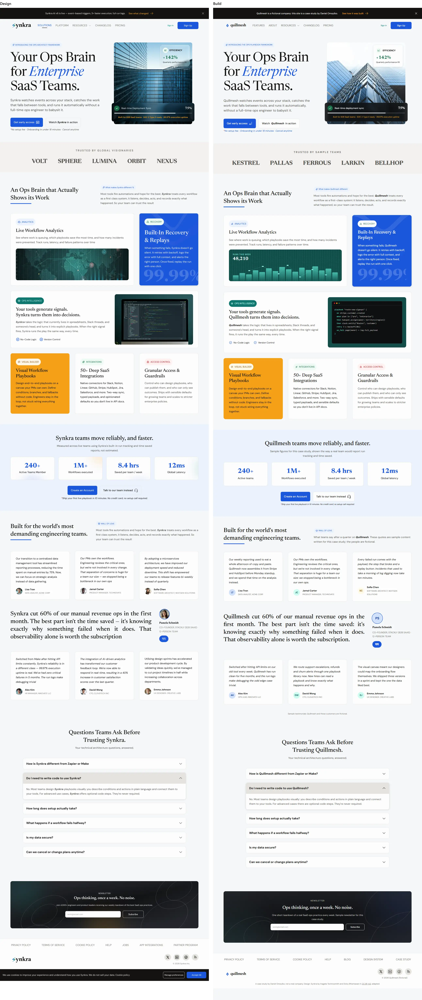
Match by height band
| From | To | Match |
|---|---|---|
| 0px | 400px | 86.02% |
| 400px | 800px | 85.52% |
| 800px | 1200px | 97.68% |
| 1200px | 1600px | 92.99% |
| 1600px | 2000px | 81.41% |
| 2000px | 2400px | 91.01% |
| 2400px | 2800px | 96.62% |
| 2800px | 3200px | 96.53% |
| 3200px | 3600px | 97.83% |
| 3600px | 4000px | 94.86% |
| 4000px | 4400px | 98.77% |
| 4400px | 4800px | 98.52% |
| 4800px | 5200px | 99.37% |
| 5200px | 5600px | 83.01% |
| 5600px | 6000px | 51.98% |
| 6000px | 6076px | 0% |
home-phone / at 402px
80.31% of pixels match within 1px · 71.67% match exactly · design 6623px tall, build 6864px
Cookie bar hidden: it is a sticky bar at the bottom of the screen; the design draws it after the footer.
differs anti-aliasing or 1px shift excluded
Match by height band
| From | To | Match |
|---|---|---|
| 0px | 400px | 98.32% |
| 400px | 800px | 96.44% |
| 800px | 1200px | 98.45% |
| 1200px | 1600px | 90.46% |
| 1600px | 2000px | 80.9% |
| 2000px | 2400px | 61.59% |
| 2400px | 2800px | 61.99% |
| 2800px | 3200px | 68.74% |
| 3200px | 3600px | 97.94% |
| 3600px | 4000px | 86.01% |
| 4000px | 4400px | 98.37% |
| 4400px | 4800px | 97.77% |
| 4800px | 5200px | 97.94% |
| 5200px | 5600px | 90.89% |
| 5600px | 6000px | 58.12% |
| 6000px | 6400px | 68.34% |
| 6400px | 6800px | 25.86% |
| 6800px | 6864px | 0% |
features-desktop /features at 1280px
88.92% of pixels match within 1px · 82.26% match exactly · design 4374px tall, build 4396px
Cookie bar hidden: it is a sticky bar at the bottom of the screen; the design draws it after the footer.
differs anti-aliasing or 1px shift excluded
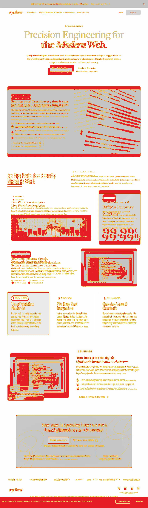
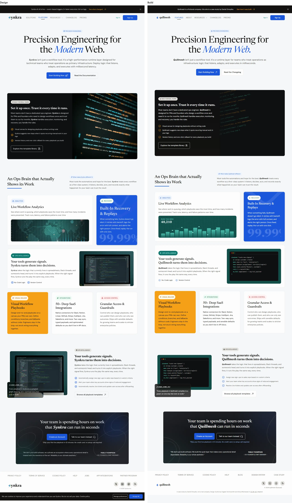
Match by height band
| From | To | Match |
|---|---|---|
| 0px | 400px | 98.37% |
| 400px | 800px | 90.81% |
| 800px | 1200px | 90.4% |
| 1200px | 1600px | 90.97% |
| 1600px | 2000px | 86.99% |
| 2000px | 2400px | 75.38% |
| 2400px | 2800px | 94.1% |
| 2800px | 3200px | 91.06% |
| 3200px | 3600px | 85.37% |
| 3600px | 4000px | 98.13% |
| 4000px | 4396px | 76.38% |
features-phone /features at 402px
75.17% of pixels match within 1px · 65.39% match exactly · design 5911px tall, build 6203px
Cookie bar hidden: it is a sticky bar at the bottom of the screen; the design draws it after the footer.
differs anti-aliasing or 1px shift excluded
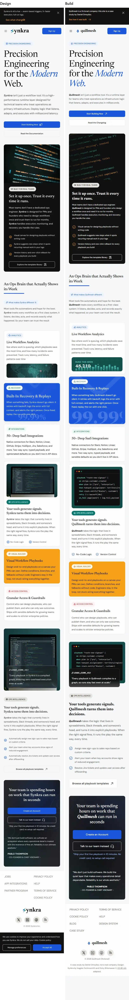
Match by height band
| From | To | Match |
|---|---|---|
| 0px | 400px | 98.87% |
| 400px | 800px | 80.85% |
| 800px | 1200px | 75.77% |
| 1200px | 1600px | 97.63% |
| 1600px | 2000px | 89.49% |
| 2000px | 2400px | 73.29% |
| 2400px | 2800px | 92.54% |
| 2800px | 3200px | 62.88% |
| 3200px | 3600px | 82.78% |
| 3600px | 4000px | 62.06% |
| 4000px | 4400px | 79.39% |
| 4400px | 4800px | 98.83% |
| 4800px | 5200px | 64.44% |
| 5200px | 5600px | 59.42% |
| 5600px | 6000px | 47.46% |
| 6000px | 6203px | 0% |
about-desktop /about at 1280px
78.49% of pixels match within 1px · 74.49% match exactly · design 3920px tall, build 3956px
Cookie bar hidden: it is a sticky bar at the bottom of the screen; the design draws it after the footer.
differs anti-aliasing or 1px shift excluded
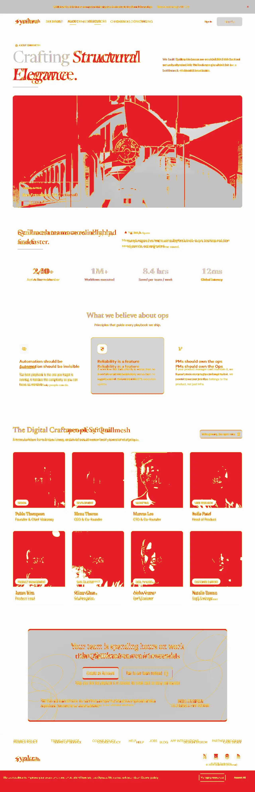
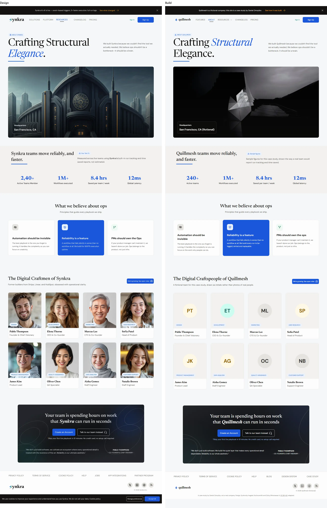
Match by height band
| From | To | Match |
|---|---|---|
| 0px | 400px | 97.01% |
| 400px | 800px | 37.82% |
| 800px | 1200px | 85.77% |
| 1200px | 1600px | 99.24% |
| 1600px | 2000px | 98.92% |
| 2000px | 2400px | 72.36% |
| 2400px | 2800px | 47.06% |
| 2800px | 3200px | 77.73% |
| 3200px | 3600px | 98.12% |
| 3600px | 3956px | 69.89% |
about-phone /about at 563px
54.9% of pixels match within 1px · 50.02% match exactly · design 5647px tall, build 5165px
Cookie bar hidden: it is a sticky bar at the bottom of the screen; the design draws it after the footer.
differs anti-aliasing or 1px shift excluded
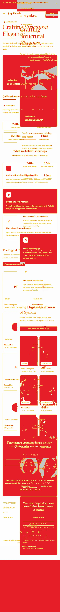
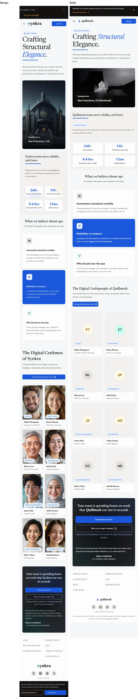
Match by height band
| From | To | Match |
|---|---|---|
| 0px | 400px | 85.23% |
| 400px | 800px | 45.43% |
| 800px | 1200px | 43.48% |
| 1200px | 1600px | 98.06% |
| 1600px | 2000px | 51.92% |
| 2000px | 2400px | 65.49% |
| 2400px | 2800px | 92.03% |
| 2800px | 3200px | 77.91% |
| 3200px | 3600px | 57% |
| 3600px | 4000px | 57.08% |
| 4000px | 4400px | 24.74% |
| 4400px | 4800px | 31.75% |
| 4800px | 5200px | 45% |
| 5200px | 5600px | 0% |
| 5600px | 5647px | 0% |
blog-desktop /blog at 1280px
79.69% of pixels match within 1px · 73.49% match exactly · design 3000px tall, build 2957px
Cookie bar hidden: it is a sticky bar at the bottom of the screen; the design draws it after the footer.
differs anti-aliasing or 1px shift excluded
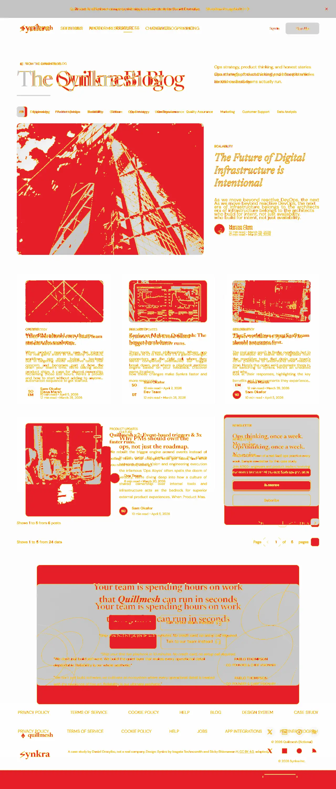
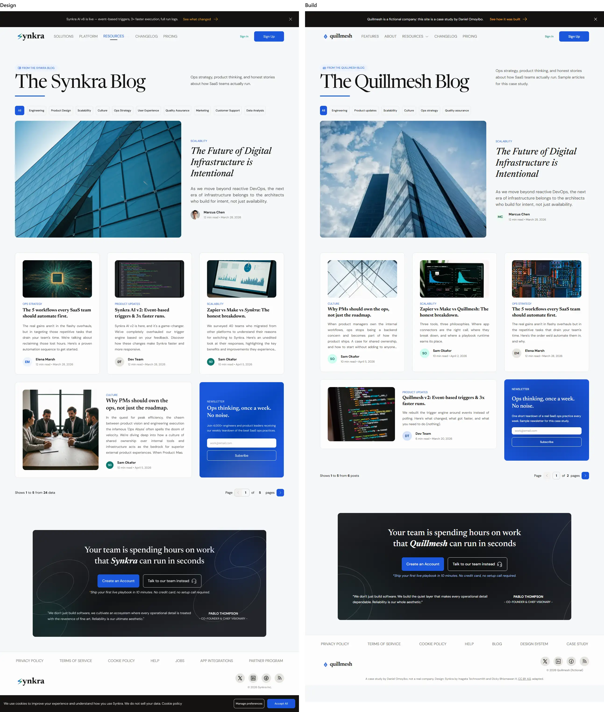
Match by height band
| From | To | Match |
|---|---|---|
| 0px | 400px | 98.24% |
| 400px | 800px | 64.23% |
| 800px | 1200px | 66.58% |
| 1200px | 1600px | 94.88% |
| 1600px | 2000px | 74.93% |
| 2000px | 2400px | 82.56% |
| 2400px | 2800px | 84.2% |
| 2800px | 3000px | 64.09% |
blog-phone /blog at 556px
53.26% of pixels match within 1px · 47.43% match exactly · design 4917px tall, build 4590px
Cookie bar hidden: it is a sticky bar at the bottom of the screen; the design draws it after the footer.
differs anti-aliasing or 1px shift excluded
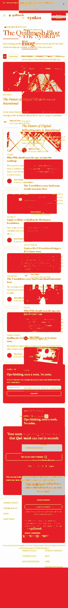
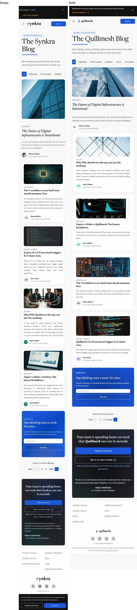
Match by height band
| From | To | Match |
|---|---|---|
| 0px | 400px | 85.96% |
| 400px | 800px | 45.14% |
| 800px | 1200px | 74.56% |
| 1200px | 1600px | 70.6% |
| 1600px | 2000px | 54.02% |
| 2000px | 2400px | 57.31% |
| 2400px | 2800px | 61.09% |
| 2800px | 3200px | 38.49% |
| 3200px | 3600px | 34.49% |
| 3600px | 4000px | 42.55% |
| 4000px | 4400px | 42.97% |
| 4400px | 4800px | 47.47% |
| 4800px | 4917px | 0% |
blog-detail-desktop /blog/the-future-of-digital-infrastructure-is-intentional at 1280px
78.04% of pixels match within 1px · 72.26% match exactly · design 3615px tall, build 3423px
Cookie bar hidden: it is a sticky bar at the bottom of the screen; the design draws it after the footer.
differs anti-aliasing or 1px shift excluded
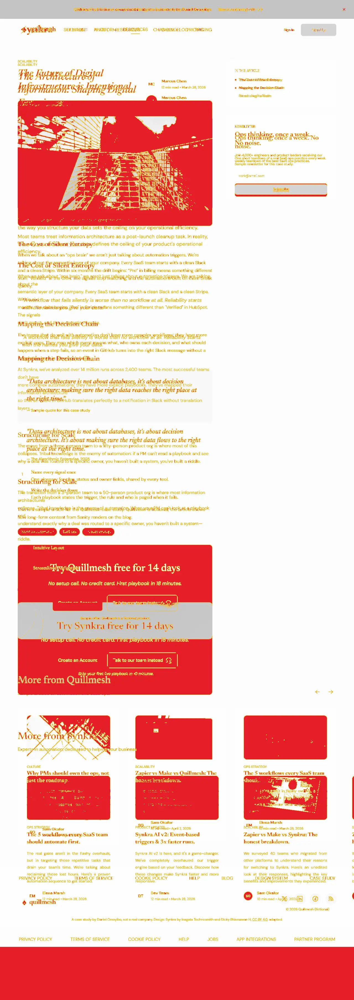
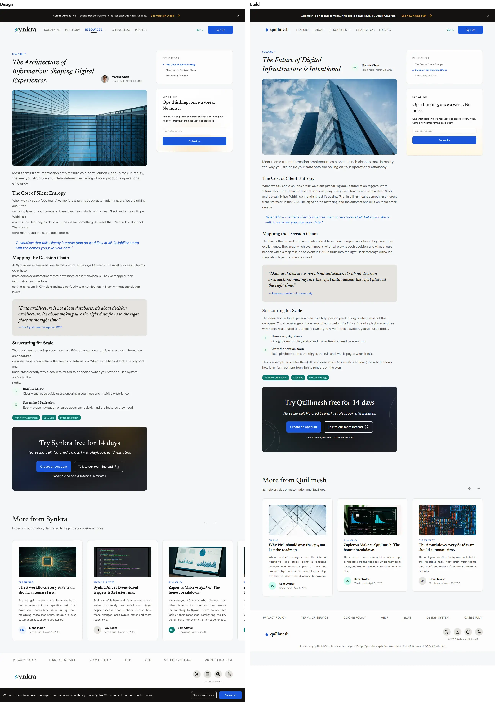
Match by height band
| From | To | Match |
|---|---|---|
| 0px | 400px | 93.85% |
| 400px | 800px | 59.4% |
| 800px | 1200px | 97.1% |
| 1200px | 1600px | 98.98% |
| 1600px | 2000px | 94.18% |
| 2000px | 2400px | 65.57% |
| 2400px | 2800px | 65.76% |
| 2800px | 3200px | 74.95% |
| 3200px | 3600px | 55.48% |
| 3600px | 3615px | 0% |
blog-detail-phone /blog/the-future-of-digital-infrastructure-is-intentional at 402px
65.41% of pixels match within 1px · 55.73% match exactly · design 5057px tall, build 4627px
Cookie bar hidden: it is a sticky bar at the bottom of the screen; the design draws it after the footer.
differs anti-aliasing or 1px shift excluded
Match by height band
| From | To | Match |
|---|---|---|
| 0px | 400px | 97.17% |
| 400px | 800px | 57.56% |
| 800px | 1200px | 98.58% |
| 1200px | 1600px | 98.73% |
| 1600px | 2000px | 99.02% |
| 2000px | 2400px | 62.59% |
| 2400px | 2800px | 31.8% |
| 2800px | 3200px | 57.04% |
| 3200px | 3600px | 68.33% |
| 3600px | 4000px | 68.41% |
| 4000px | 4400px | 54.99% |
| 4400px | 4800px | 32.75% |
| 4800px | 5057px | 0% |
changelog-desktop /changelog at 1280px
93.39% of pixels match within 1px · 89.2% match exactly · design 2756px tall, build 2732px
Cookie bar hidden: it is a sticky bar at the bottom of the screen; the design draws it after the footer.
differs anti-aliasing or 1px shift excluded
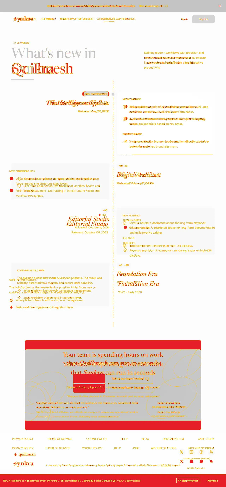
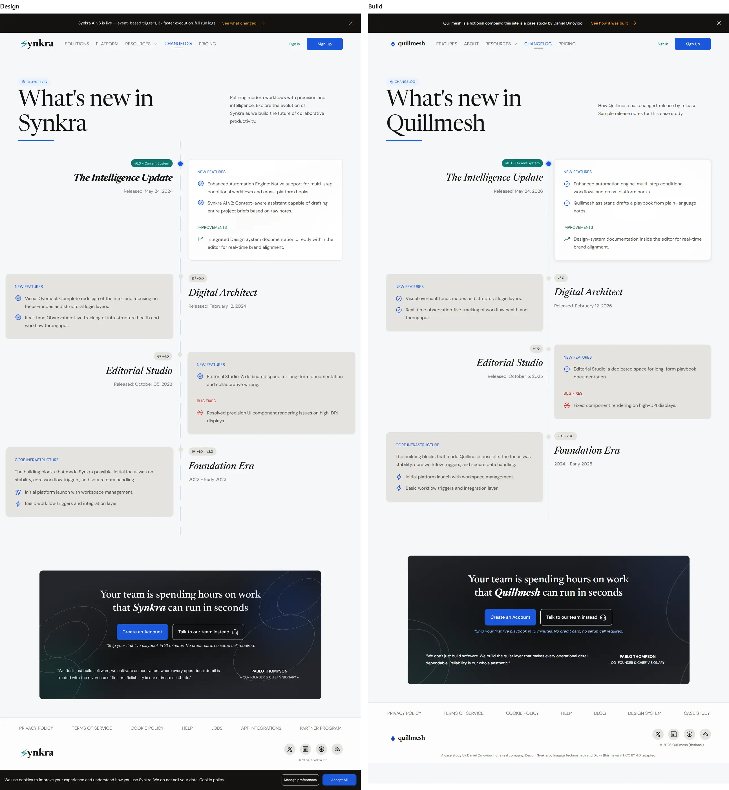
Match by height band
| From | To | Match |
|---|---|---|
| 0px | 400px | 98.93% |
| 400px | 800px | 98.9% |
| 800px | 1200px | 99.51% |
| 1200px | 1600px | 99.4% |
| 1600px | 2000px | 89.8% |
| 2000px | 2400px | 91.37% |
| 2400px | 2756px | 73.64% |
changelog-phone /changelog at 402px
75.67% of pixels match within 1px · 68.5% match exactly · design 3708px tall, build 4048px
Cookie bar hidden: it is a sticky bar at the bottom of the screen; the design draws it after the footer.
differs anti-aliasing or 1px shift excluded
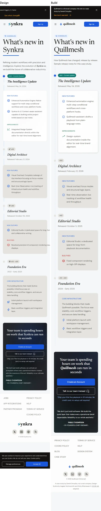
Match by height band
| From | To | Match |
|---|---|---|
| 0px | 400px | 98.25% |
| 400px | 800px | 98.46% |
| 800px | 1200px | 99.4% |
| 1200px | 1600px | 99.09% |
| 1600px | 2000px | 99.37% |
| 2000px | 2400px | 99.39% |
| 2400px | 2800px | 53.25% |
| 2800px | 3200px | 63.75% |
| 3200px | 3600px | 52.4% |
| 3600px | 4000px | 2.45% |
| 4000px | 4048px | 0% |
pricing-desktop /pricing at 1280px
94.99% of pixels match within 1px · 90.35% match exactly · design 3032px tall, build 3045px
Cookie bar hidden: it is a sticky bar at the bottom of the screen; the design draws it after the footer.
differs anti-aliasing or 1px shift excluded
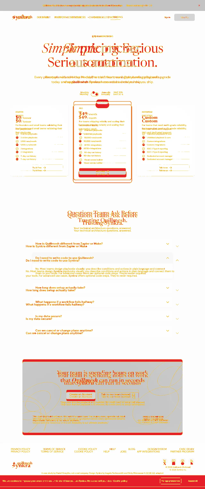
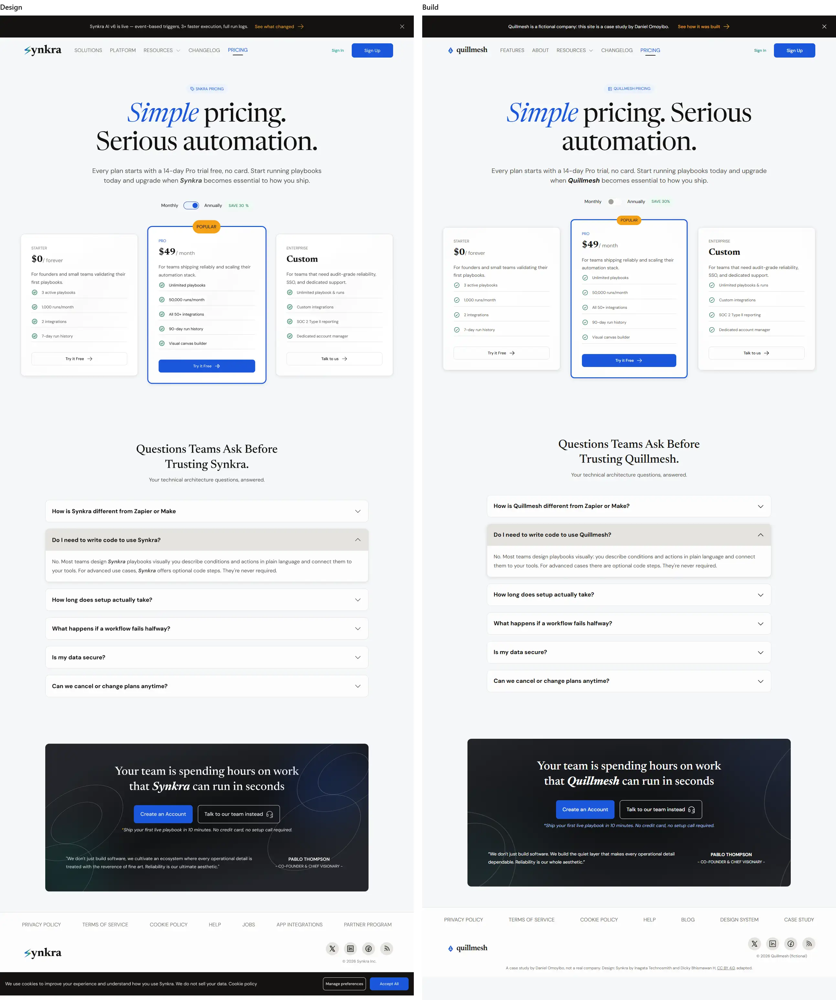
Match by height band
| From | To | Match |
|---|---|---|
| 0px | 400px | 96.93% |
| 400px | 800px | 98.03% |
| 800px | 1200px | 97.16% |
| 1200px | 1600px | 98.84% |
| 1600px | 2000px | 99.25% |
| 2000px | 2400px | 95.53% |
| 2400px | 2800px | 96.01% |
| 2800px | 3045px | 67.47% |
pricing-phone /pricing at 402px
88.68% of pixels match within 1px · 81.15% match exactly · design 4319px tall, build 4488px
Cookie bar hidden: it is a sticky bar at the bottom of the screen; the design draws it after the footer.
differs anti-aliasing or 1px shift excluded
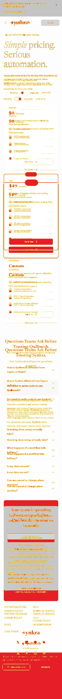
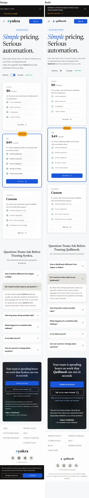
Match by height band
| From | To | Match |
|---|---|---|
| 0px | 400px | 99.15% |
| 400px | 800px | 99.02% |
| 800px | 1200px | 95.89% |
| 1200px | 1600px | 89.13% |
| 1600px | 2000px | 95.5% |
| 2000px | 2400px | 98.34% |
| 2400px | 2800px | 98.88% |
| 2800px | 3200px | 98.86% |
| 3200px | 3600px | 86.48% |
| 3600px | 4000px | 84.96% |
| 4000px | 4400px | 48.74% |
| 4400px | 4488px | 0% |
Responsive sweep

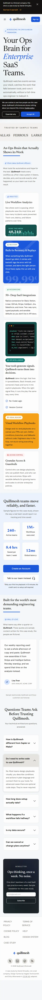

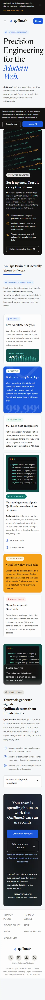